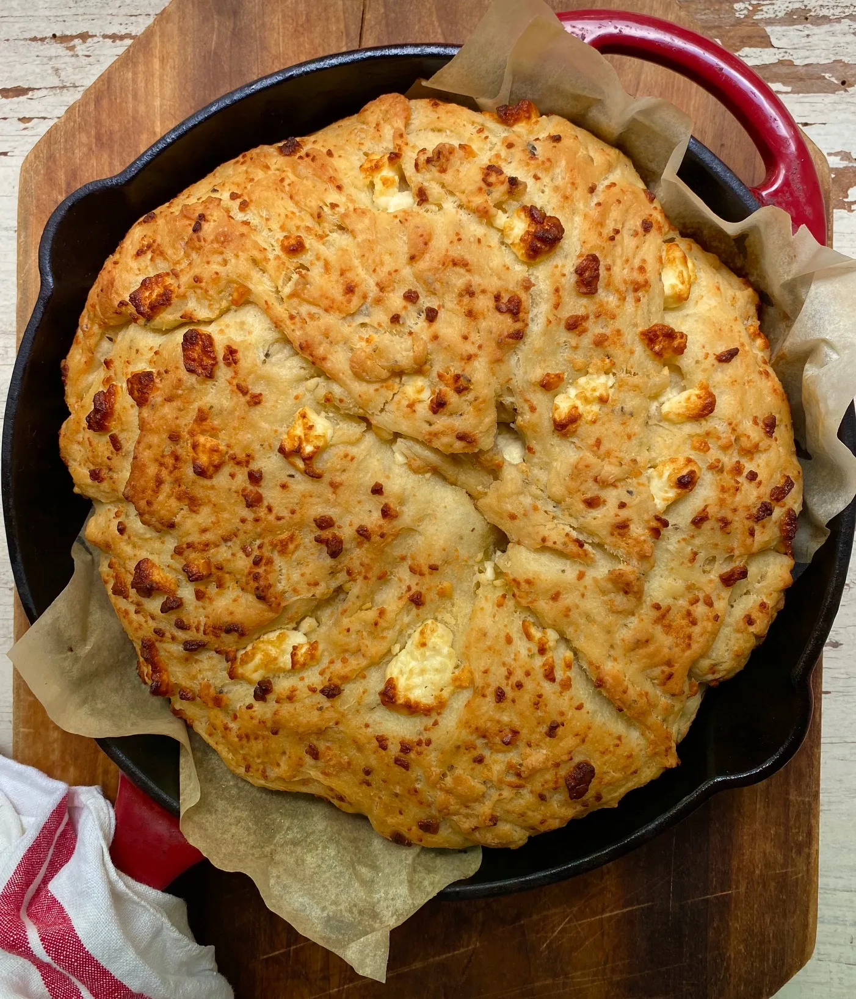

Tiropsomo is a traditional Greek bread with feta cheese. It's made with a combination of white flour, crumbled feta, yeast, honey, olive oil, oregano, and salt. Once formed, the dough is left to rise, and it's then placed into a shallow oven dish brushed with olive oil. Before it's baked until golden brown, the dough is sprinkled with feta and oregano.
Meal prep time : 50 minutes
Servings : 1 loaf